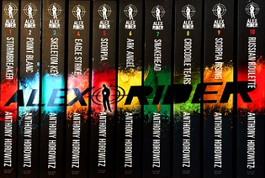
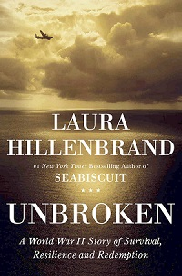

I have always enjoyed reading. I first took a liking to books when my mother taught me how to read. We started out with the simple kiddy books (obviously), but I noticed that I enjoyed the feel of being able to read something that wasn't particulary reality, which sparked my interest in fantasy books. Once I got older and was able to actually fully read, I looked into Harry Potter. To this day, Harry Potter is my favorite series.
I have also thoroughly enjoyed the Alex Rider series. This series includes a teenage boy named Alex Rider (hence the title), who was considered a spy and went on several adventures. I began reading this series back in middle school. I later decided to continue the series and finish it later in high school.
There are many books that I have not read yet. I have already read many adventure and fantasy books. Although I am not a huge fan of non-fiction books, I would like to try to spark an interest in them. For my non-fiction book, I will try to read Unbroken.
The next part of my reading bucket list is to finish the Inkheart series. I began the series when I was in middle school, but I never finished it. I have been trying to finish up the second book of the trilogy. My goal is to finish it by the end of October.
By Ayana L.